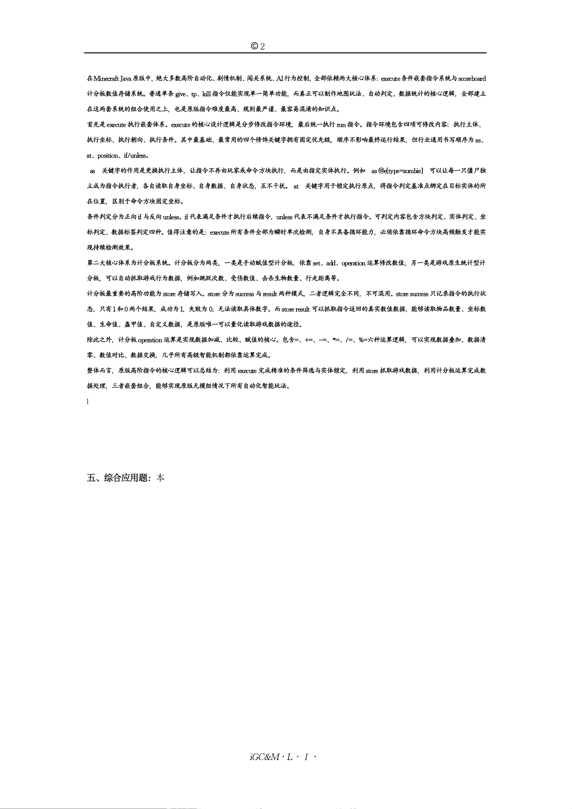

iGCraftLit·iGC&M 山东教育研究院 监制
©
2026.8
在Minecraft Java原版中，绝大多数高阶自动化、剧情机制、闯关系统、AI行为控制，全部依赖两大核心体系：execute条件嵌套指令系统与scoreboard
计分板数值存储系统。普通单条 give、tp、kill 指令仅能实现单一简单功能，而真正可以制作地图玩法、自动判定、数据统计的核心逻辑，全部建立
在这两套系统的组合使用之上，也是原版指令难度最高、规则最严谨、最容易混淆的知识点。
首先是execute 执行嵌套体系。execute的核心设计逻辑是分步修改指令环境，最后统一执行 run 指令。指令环境包含四项可修改内容：执行主体、
执行坐标、执行朝向、执行条件。其中最基础、最常用的四个修饰关键字拥有固定优先级，顺序不影响最终运行结果，但行业通用书写顺序为as、
at、position、if/unless。
as 关键字的作用是更换执行主体，让指令不再由玩家或命令方块执行，而是由指定实体执行。例如 as @e[type=zombie] 可以让每一只僵尸独
立成为指令执行者，各自读取自身坐标、自身数据、自身状态，互不干扰。 at 关键字用于锁定执行原点，将指令判定基准点绑定在目标实体的所
在位置，区别于命令方块固定坐标。
条件判定分为正向 if 与反向 unless。if 代表满足条件才执行后续指令，unless 代表不满足条件才执行指令。可判定内容包含方块判定、实体判定、坐
标判定、数据标签判定四种。值得注意的是：execute所有条件全部为瞬时单次检测，自身不具备循环能力，必须依靠循环命令方块高频触发才能实
现持续检测效果。
第二大核心体系为计分板系统。计分板分为两类，一类是手动赋值型计分板，依靠set、add、operation 运算修改数值；另一类是游戏原生统计型计
分板，可以自动抓取游戏行为数据，例如跳跃次数、受伤数值、击杀生物数量、行走距离等。
计分板最重要的高阶功能为store 存储写入。store 分为 success 与result 两种模式，二者逻辑完全不同，不可混用。store success 只记录指令的执行状
态，只有1 和0 两个结果，成功为1，失败为 0，无法读取具体数字。而store result 可以抓取指令返回的真实数值数据，能够读取物品数量、坐标数
值、生命值、盔甲值、自定义数据，是原版唯一可以量化读取游戏数据的途径。
除此之外，计分板 operation 运算是实现数据加减、比较、赋值的核心。包含=、+=、-=、*=、/=、%=六种运算逻辑，可以实现数据叠加、数据清
零、数值对比、数据交换，几乎所有高级智能机制都依靠运算完成。
整体而言，原版高阶指令的核心逻辑可以总结为：利用 execute 完成精准的条件筛选与实体锁定，利用 store 抓取游戏数据，利用计分板运算完成数
据处理，三者嵌套组合，能够实现原版无模组情况下所有自动化智能玩法。
18.根据文章内容，写出 execute 体系中 if 与 unless 的判定区别，以及 store success 的记录特点。（3 分）
19.在需要读取玩家主手物品真实堆叠数量、存入计分板数值的场景下，根据文章区分规则，应当使用 store success 还是store result？
并说明原因。（3 分）
20.通读全文，完整总结 MC 高阶指令三大核心模块（execute 条件判定、store 数据存储、计分板运算）各自的功能，并分析三者
组合使用为什么是原版高级地图机制的核心底层逻辑。（4 分）
五、综合应用题：本题共 3 小题，共 40 分，第 21 题 10 分，第 22 题 13 分，第 23 题 17 分。
21.（本题满分 10 分）请你结合以下MC 知识，完成下面 6 道小题。
Minecraft Java 原版拥有大量基础指令与游戏原生机制。
［一］游戏模式指令： /gamemode ，creative 创造、survival 生存、adventure 冒险、spectator 旁观，简写可用数字 1/0/2/3；
［二］物品生成指令标准格式： /give @目标 物品ID 数量 ， @s 代表指令执行者自己；
［三］目标选择器： @p 最近玩家， @a 全部玩家， @e[type=xxx] 筛选指定实体；
［四］计分板基础： scoreboard objectives add 名称 统计类型 可创建数据统计面板；
［五］酿造规则：红石粉延长药水时长，萤石粉提升药水等级，二者不能同时用于同一瓶药水；
［六］生物机制：猪灵仅在未穿戴黄金护甲时主动攻击玩家，1 件黄金装备即可安抚普通猪灵。
（1）（2 分）写出两条切换生存模式的指令，一条完整英文写法，一条数字简写。
（2）（1 分）补全完整指令：给自己生成 32 块橡木木板（只填完整整条指令）。
（3）（1 分）填空：指令 /scoreboard objectives add jump stat.jump 中，jump 这个计分板项目统计的是玩家▲。
（4）（1 分）酿造一瓶速度药水，想要延长持续时间，需要在粗制药水、地狱疣、糖之后添加什么材料？
（5）（2 分）玩家全身无任何黄金装备进入下界，遇见普通猪灵会发生什么现象？
（6）（3 分）玩家编写指令 /execute at @e[type=cow] run give @p iron_ingot 1 ，地图内一共有 5 头奶牛，没有其他实体，全程只有
1 名在线玩家。请完整说明这条指令执行一次后，该玩家总共会获得多少铁锭，并解释原理。
22.（本题满分 13 分）请你结合以下 MC 进阶知识，完成下面5 道小题。